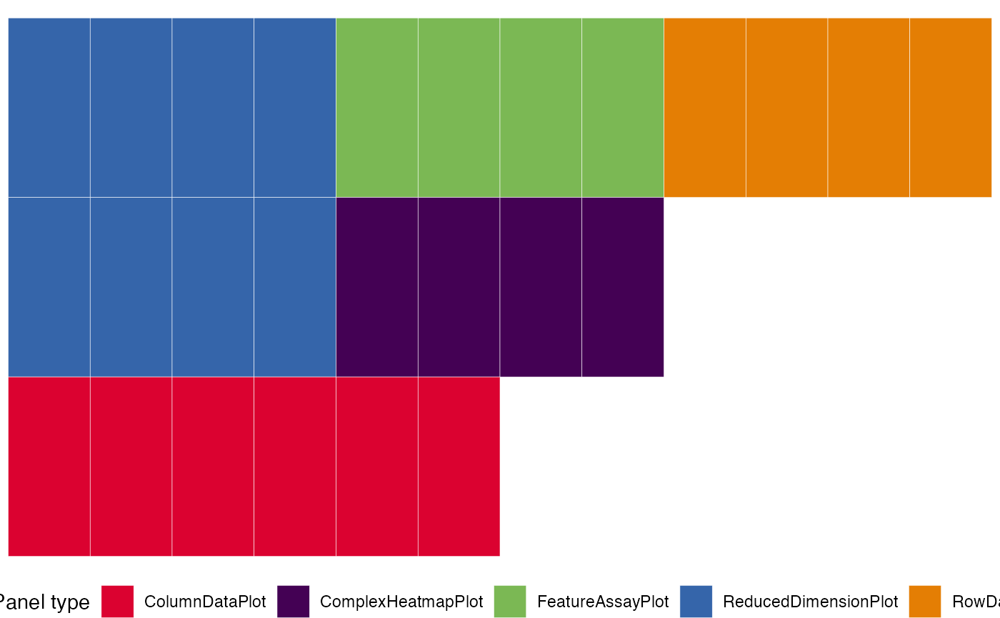
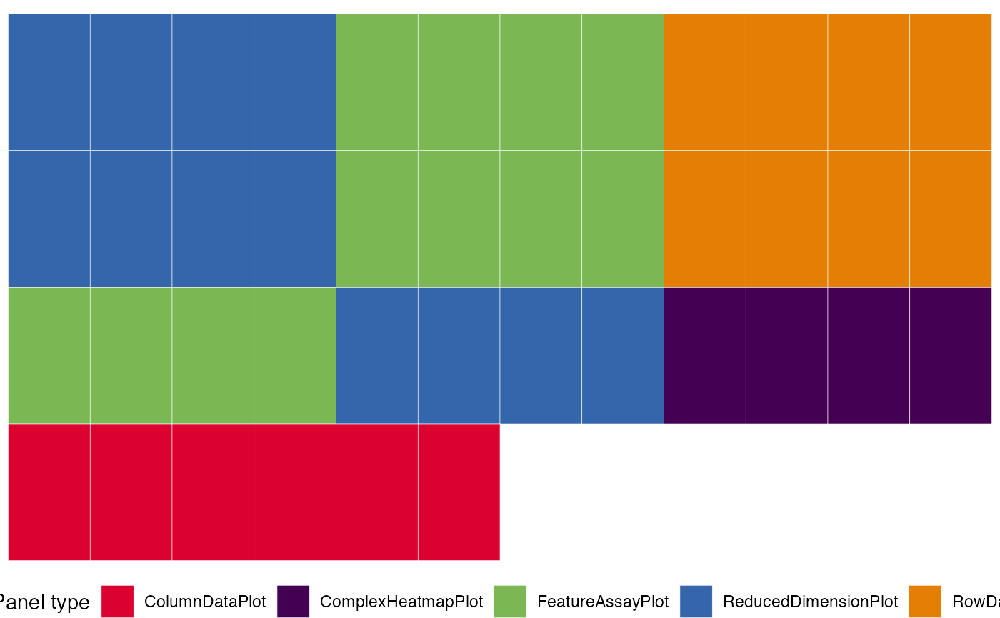
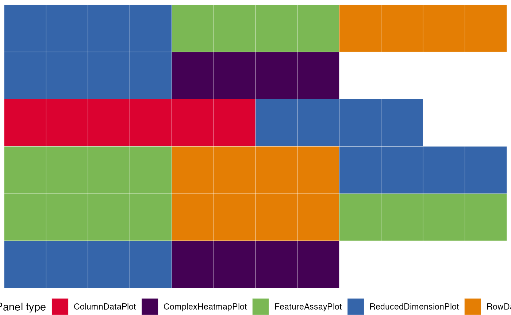

Glue a set of initial configuration objects, combining them into a single
valid initial set.
Usage
glue_initials(
...,
remove_duplicate_panels = TRUE,
verbose = TRUE,
custom_panels_allowed = NULL
)Arguments
- ...
A set of
initiallist objects (in the format that is required to be passed as a parameter in the call toiSEE::iSEE()) - just as in the behavior of thec()/paste()function- remove_duplicate_panels
Logical, defaults to
TRUE. Defines the behavior to remove panels detected as duplicated. Can be relevant upon concatenating mid to large sets of panels.- verbose
Logical, defaults to
TRUE. If on, prints out a series of informative messages to describe the actions undertaken upon running.- custom_panels_allowed
Character vector, defaults to
NULL. Can be used to specify additional panels to be allowed in the concatenation.
Value
A single initial list object, in the format that is required to
be passed as a parameter in the call to iSEE::iSEE(), concatenating the
values provided as input.
Details
The usage of custom_panels_allowed can be especially relevant when one creates
one or more custom panels, with a specific name that needs to be indicated in
this parameter.
For example, if using a panel of class FancyPlotPanel and one called
FancyTablePanel, the value for custom_panels_allowed should be set to
c("FancyPlotPanel", "FancyTablePanel").
It is worth mentioning that iSEE::iSEE() is actually able to handle the
automatic renaming of panels that could be detected as duplicated. This can
basically relax the requirement on the "uniqueness" of the configured panels, with
the only caveat of having to think of how the transmissions between panels
will be handled; nevertheless, most users might not even need to face this
situation.
Examples
## Load a dataset and preprocess this quickly
sce <- scRNAseq::RichardTCellData()
#> snapshotDate(): 2023-04-24
#> see ?scRNAseq and browseVignettes('scRNAseq') for documentation
#> loading from cache
#> see ?scRNAseq and browseVignettes('scRNAseq') for documentation
#> loading from cache
#> snapshotDate(): 2023-04-24
#> see ?scRNAseq and browseVignettes('scRNAseq') for documentation
#> loading from cache
#> snapshotDate(): 2023-04-25
#> loading from cache
#> require("ensembldb")
sce <- scuttle::logNormCounts(sce)
sce <- scater::runPCA(sce)
sce <- scater::runTSNE(sce)
## Select some features and aspects to focus on
gene_list_1 <- c("ENSMUSG00000026581")
gene_list_2 <- c("ENSMUSG00000005087", "ENSMUSG00000015437")
cluster <- "stimulus"
group <- "single cell quality"
initial1 <- iSEEinit(sce = sce,
features = gene_list_1,
clusters = cluster,
groups = group)
initial2 <- iSEEinit(sce = sce,
features = gene_list_2,
clusters = cluster,
groups = group)
initials_merged <- glue_initials(initial1,
initial2)
#> Merging together 2 `initial` configuration objects...
#> Combining sets of 6, 10 different panels.
#>
#> Dropping 1 of the original list of 16 (detected as duplicated entries)
#>
#> Some names of the panels were specified by the same name, but this situation can be handled at runtime by iSEE
#> (This is just a non-critical message)
#>
#> Returning an `initial` configuration including 15 different panels. Enjoy!
#> If you want to obtain a preview of the panels configuration, you can call `view_initial_tiles()` on the output of this function
view_initial_tiles(initial1)

view_initial_tiles(initial2)

view_initial_tiles(initials_merged)

## Continue your exploration directly within iSEE!
if (interactive())
iSEE(sce, initial = initial_merged)
#> Error in iSEE(sce, initial = initial_merged): could not find function "iSEE"